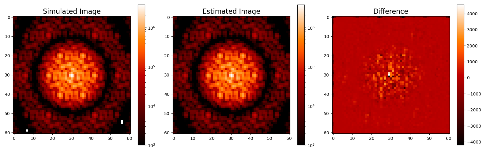
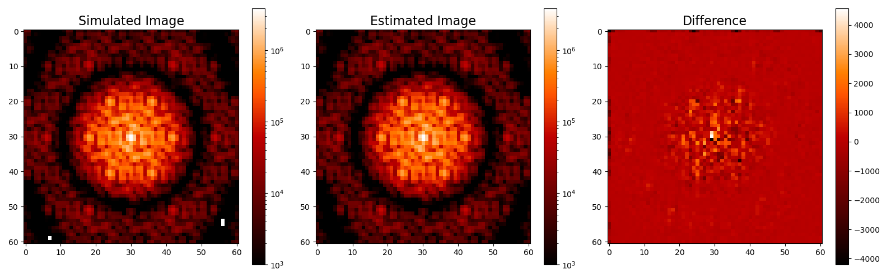
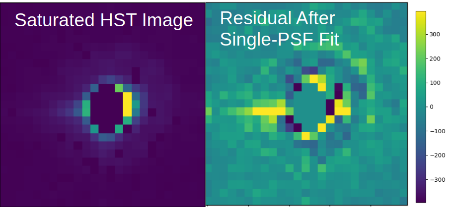

![ Fig. 1. From De Furio et al. (2025). Left: First co-added frame from simulated data cube produced by ami_sim in the AMI observing mode for NIRISS. This frame is representative of 155 co-added images each with eight groups. Center: Image produced with the maximum likelihood estimate of the WFE for the simulated image. Right: Residuals of first simulated frame minus our maximum likelihood estimated image. Note: Colorbar scales are the same for the left and center image, but different for the right image.](images/AMI_image_bestfit.png){kind=link}
{kind=link}
{kind=link}
{kind=link}

The first identification of a turnover in the initial mass function within a stellar population, NGC 2024. See link for NASA Press Release.
In addition to my application of empirical PSF models, I collaborate with a group of researchers at the NASA Jet Propulsion Laboratory through the Strategic University Research Partnership program to test a novel high-contrast imaging analysis for full aperture and AMI observing modes. Most high-contrast imaging routines require observations of a reference star to remove the stellar contribution or calibrate phase errors which can typically take half of the total observing time. This new technique takes advantage of the stability of JWST and uses the measured wavefront error (WFE) from a phase calibration observation (performed roughly every 48 hours) as prior information to estimate the WFE of a given observation and simultaneously search for faint companions. The model of the wavefront includes three low order Zernike coefficients per primary mirror segment, using the Hexike basis, and knowledge of the high frequency errors that are derived during phase calibration. The most likely WFE and astrophysical scene are determined by generating synthetic reference PSFs from the Hexike coefficients and comparing to the data. In De Furio et al. (2025), I demonstrate the effectiveness of this technique on simulations of a NIRISS AMI imaging program (GO-1843), recovering a companion with a contrast of 8 magnitudes and a separation of 0.205″ (1.5λ/D, 3.16 NIRISS pixels) relative to the primary star. Without the need to observe a reference star, significant telescope time can be saved. The results of this work are published in the SPIE Conference Proceedings, and can be found here . I am also co-PI on a JWST Cycle 4 archival program (AR 8369) to apply this technique to real NIRISS data, and once validated, will publicly release the code for use in future JWST cycles.
This work is still in preparation, but the preliminary results are shown below. Results will be published in 2026. I anticipate improved performance with applications to JWST data.

The first identification of a turnover in the initial mass function within a stellar population, NGC 2024. See link for NASA Press Release.

Detection of the second Y-Y dwarf binary system ever, WISE1935-1546, using JWST/MIRI probing the lowest mass binaries in the Galaxy. See link for paper.

Resolving companions below the diffraction limit with HST WFC3/IR. See link for paper.
For inquiries about collaborations, details about my research and outreach, or general questions, please reach out to me through email.